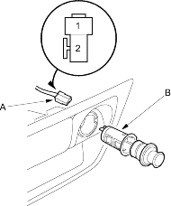
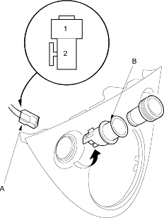

- Remove the centre lower cover (see page 20-75).
- Disconnect the 2P connector (A) from the cigarette lighter (B).
Wire side of female terminals

- Inspect the connector terminals to be sure they are all making good contact.
- If the terminals are bent, loose or corroded, repair them as necessary and recheck the system.
- If the terminals look OK, go to step 4.
- Turn the ignition switch ACC (I) and check for voltage between the No. 1 and No. 2 terminals.
- If there is no battery voltage, check for:
- Blown No. 18 (15A) fuse in the under-dash fuse/relay box.
- Poor ground (G502).
- An open in the YEL/GRN or BLK wire.
- Remove the shift lever panel (see page 20-218).
- Disconnect the 2P connector (A) from the cigarette lighter (B).
Wire side of female terminals

- Inspect the connector terminals to be sure they are all making good contact.
- If the terminals are bent, loose or corroded, repair them as necessary and recheck the system
- If the terminals look OK, go to step 4.
- Turn the ignition switch ACC (I) and check for voltage between the No. 1 and No. 2 terminals. There should be battery voltage.
- If there is no battery voltage, check for:
- Blown No. 18 (15A) fuse in the under-dash fuse/relay box.
- Poor ground (G502).
- An open in the YEL/GRN or BLK wire.